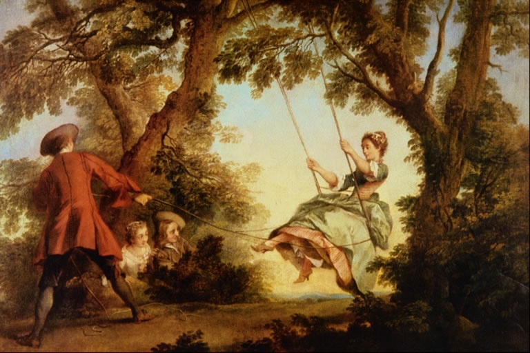
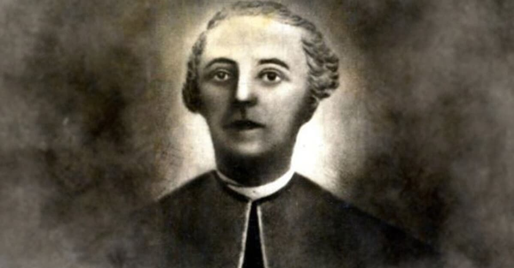

Contexto histórico
O Arcadismo, também conhecido como Neoclassicismo, surgiu no século XVIII como uma reação ao Barroco. Este movimento buscou inspiração na simplicidade e na beleza da vida pastoril, além dos ideais clássicos de equilíbrio e harmonia. O movimento literário possui ideal Iluminista, um movimento intelectual caracterizado por priorizar o racionalismo em detrimento da religiosidade. Acompanham nesse período, acontecimento históricos importantes para o movimento, como a queda das monarquias absolutistas junto da ascensão da burguesia, a Revolução Francesa impulsionada pelo Ilimunismo, e o grande desenvolvimento tecnológico acompanhado de um êxodo rural em larga escala. Em Portugal, o Arcadismo acontece entre 1756 e 1825, e no Brasil, no período entre 1768 e 1808.
Características do Arcadismo
O Arcadismo surgue como um movimento totalmente contrário ao Barroco, e portanto, ao contrário do exagero e rebuscamento barroco, o Arcadismo preza por uma linguagem simples, com vocabulário simples de entender, e sem o uso constante de figuras de linguagem ou outros meios para complicar a leitura, tornando os textos produzidos durante esse período mais compreensíveis e acessíveis. O movimento, assim como o Classicismo, retorna aos ideais gregos clássicos, utilizando do latim e dando preferência à sonetos e citando mitologia nas obras. Como foi um movimento muito influenciado pelo Iluminismo, é importante destacar que nos textos, os autores seguirão a ideia de que a razão deve prevalecer sobre a fé. Os autores dessa época frequentemente utilizavam de pseudônimos, ou seja, utilizavam nomes falsos ao assinar seus poemas. Por último, o bucolismo tem grande importância nas produções arcadistas, ele basicamente defende a vida calma fora das cidades e enaltece a grandeza da natureza, valorizando uma vida pastoril, na tranquilidade dos campos. Resumindo, as características do Arcadismo são:
• Linguagem simples
• Oposição ao Barroco
• Retorno à tradição clássica
• Uso de pseudônimos (uso de nomes falsos)
• Bucolismo
• Uso de expressões em latim

Expressões em latim
Carpe diem
Carpe diem é um dos mais famosos preceitos latinos que significa aproveite o dia, viva o presente, influenciando o Arcadismo.
Locus amoenus
Locus amoenus significa lugar ameno, e segundo os poetas, o lugar ideal para se viver seriam os campos, exaltando os ambientes rurais.
Fugere urbem
Fugere urbem significa fugir da cidade, acompanhando o ideal árcade, para se ter paz e viver bem, seria preciso fugir dos centros urbanos.
Inutilia truncat
Inutilia truncat significa cortar o inútil, o que o Arcadismo adota em contrapartida ao Barroco, cortando a linguagem complexa e rebuscada, utilizando de uma linguagem simples, direta e clara.
Autores e obras
Cláudio Manuel da Costa
Nasceu e morreu em Minas Gerais, foi um minerador, advogado e poeta, tendo parte na Inconfidência Mineira. Sob o pseudônimo de Glauceste Satúrnio, Cláudio trouxe o Arcadismo ao Brasil quando publicou, em 1768, Obras Poéticas. Posteriormente também fundou a Arcádia Ultramarina, uma academia literária.

Obras poéticas
Obras Poéticas, de Cláudio Manuel da Costa consiste numa coletânea de poemas do escritor brasileiro, poemas esses que seguiam os moldes arcadistas, buscavam linguagem simples, racional e proximidade à natureza, contrário ao Barroco. Ao mesmo, tempo seus poemas se aprofundam em algumas questões filosóficas e sociais da época. Segue um pequeno trecho da obra, onde se destacam algumas características árcades: